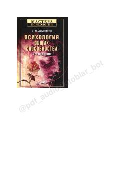

ПОInson intellekti, kreativligi va qobiliyatlari haqidagi fundamental ilmiy tadqiqot.
Ushbu kitob insonning umumiy qobiliyatlari, jumladan intellekt, o'rganish qobiliyati va kreativlikning nazariy asoslarini chuqur tahlil qiladi. Muallif intellektning eng mashhur modellari, eksperimental tadqiqotlar va zamonaviy psixodiagnostika vositalarini ilmiy nuqtai nazardan yoritib beradi.